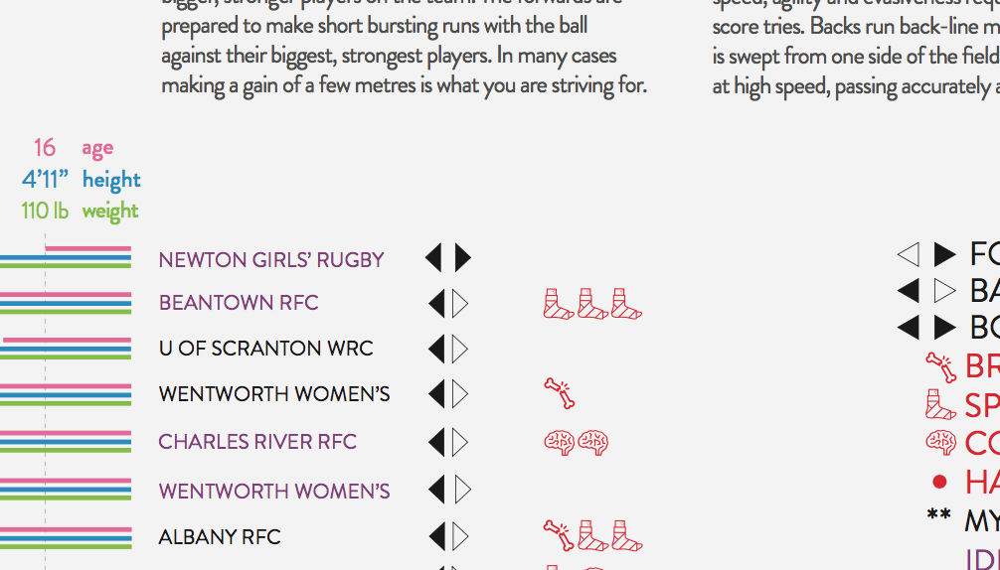
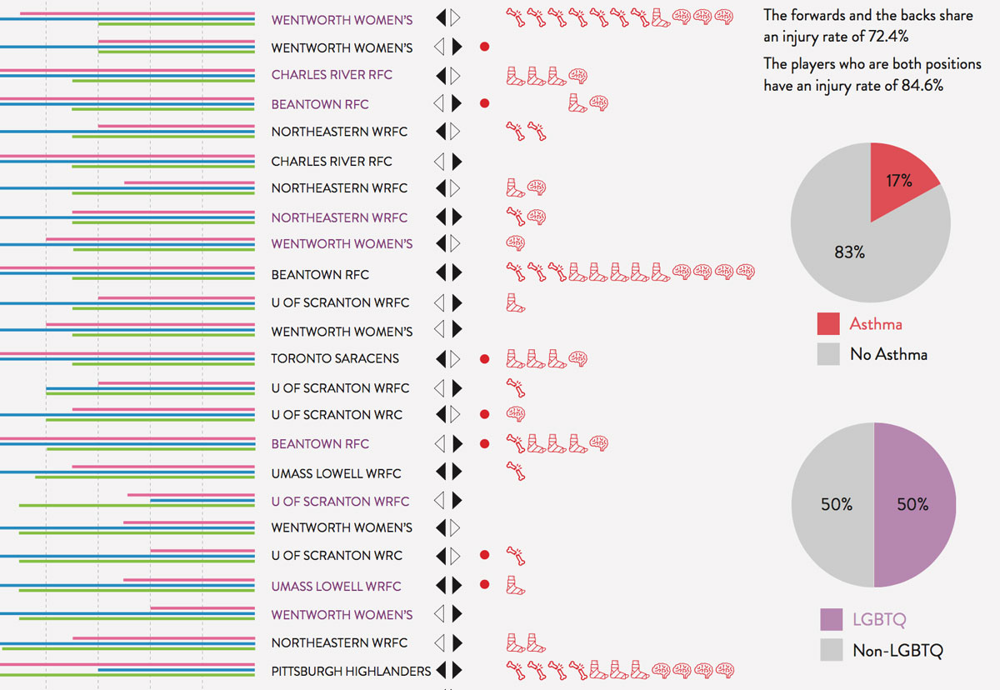
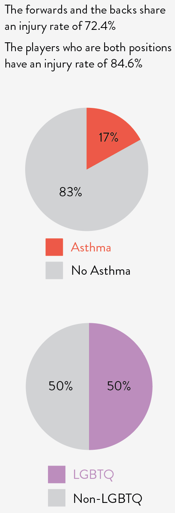
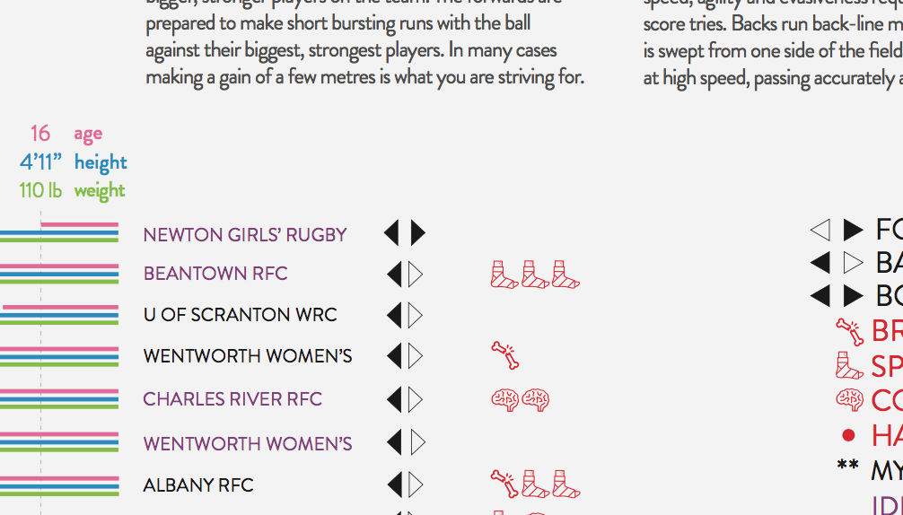
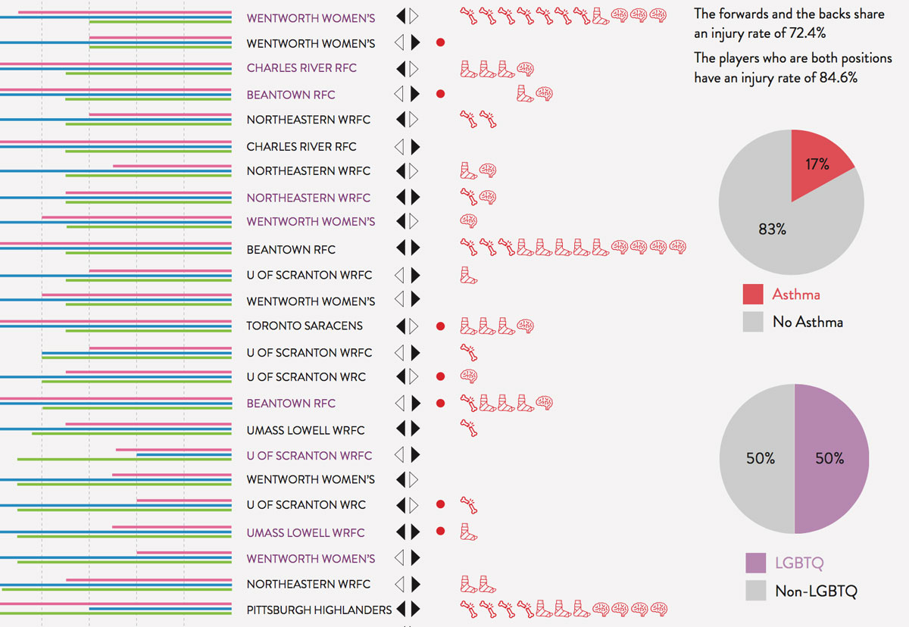
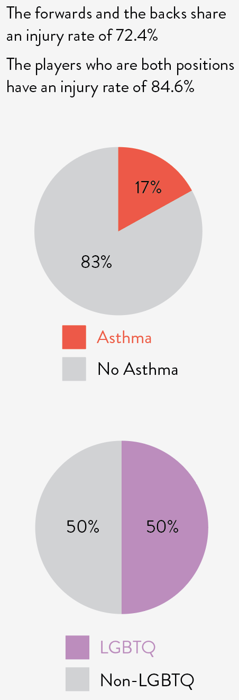

100 Things.
This project was focussed upon crating a visual representation of one hundred things or people. Each data point was required to have at least seven addition points of information to include. The objective was to create a poster and design that was dynamic as well as hierarchly correct.
 




